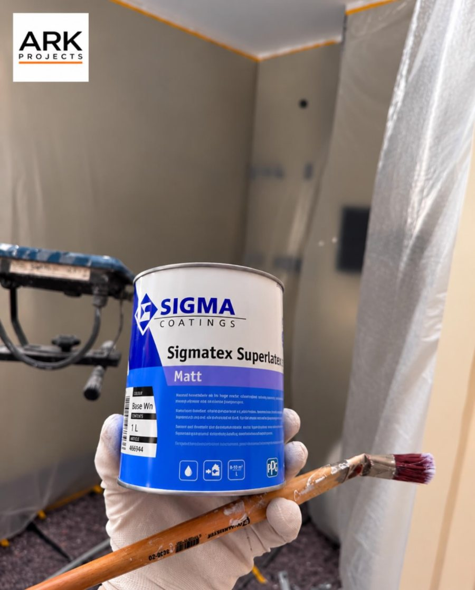
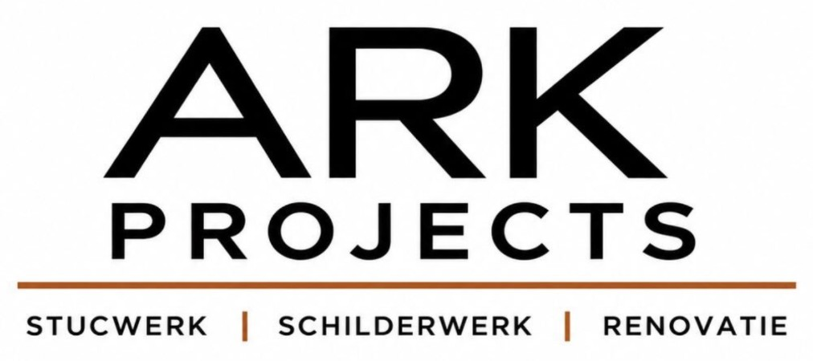
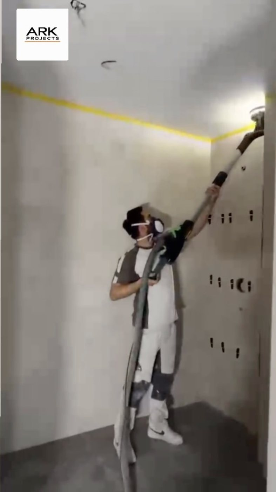
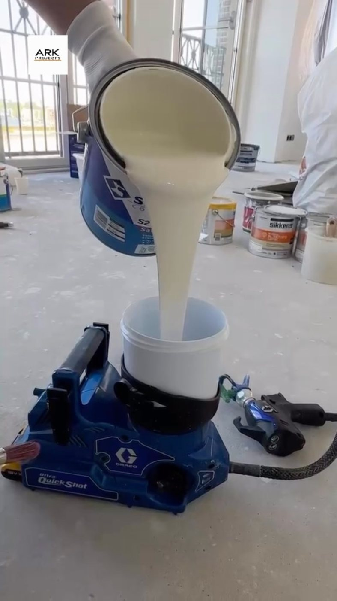

Stucwerk
Vlakke, nette wanden en plafonds als basis voor een mooie afwerking.
ARK Projects verzorgt stucwerk, schilderwerk, gipsplaat, wanden, plafonds en renovatie. Kwaliteit en vakmanschap, tot in elk detail.


Van een kale ruimte tot een luxe eindresultaat: ARK Projects pakt het werk aan met aandacht voor de details.
Vlakke, nette wanden en plafonds als basis voor een mooie afwerking.
Schuren, voorbereiden en schilderen met hoogwaardige verf, voor een strak eindresultaat.
Wanden en plafonds opbouwen en afwerken met gipsplaat.
Nette, gladde oppervlakken, klaar om te schilderen.
Deuren en lakwerk met een verfspuit gelakt voor een gladde, egale afwerking.
Luxe finish bij renovatie en afbouw, van voorbereiding tot oplevering.
Mooi schilderwerk begint vóór de eerste verflaag. Bij ARK Projects telt elk detail.


Strakke deuren, nette hoeken: het verschil zit in de details. Deuren worden met een verfspuit gelakt voor een gladde, egale afwerking.
Meer voorbeelden van het werk vind je op het Instagram-account van ARK Projects.
Stuur ARK Projects een bericht en ontvang een offerte op maat.